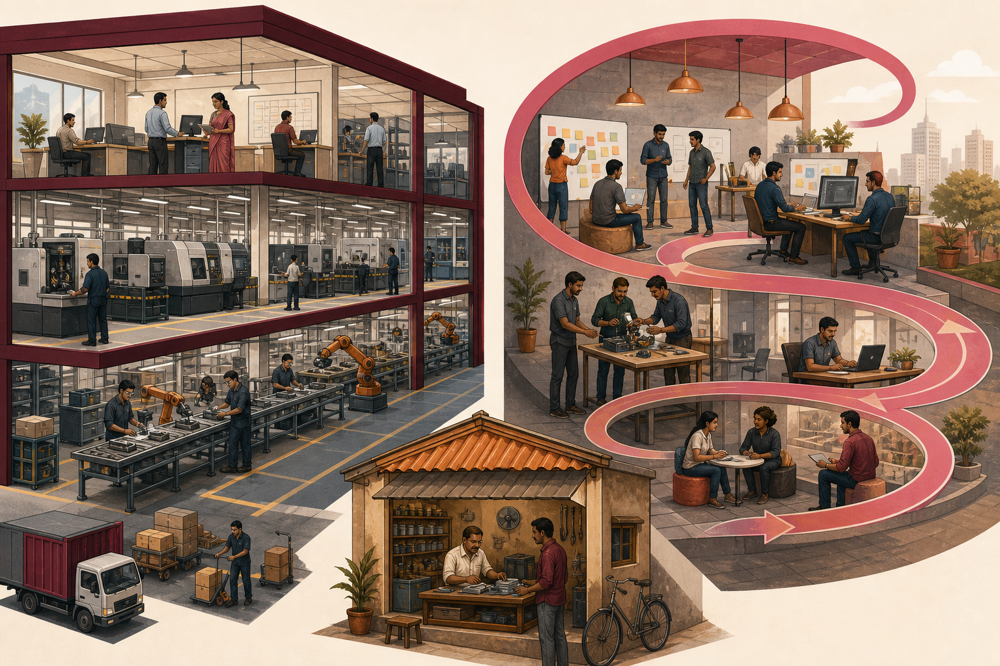

Contextual case
Connect the concept
Case connection: Quixy from Vividminds is useful for contrasting a repeatable, scalable platform search with a conventional service firm's operating model.
I.7 · CO1 · K2
An established company usually executes a known model; a startup searches for a repeatable and scalable model under high uncertainty.

Explore the model
Use the controls to inspect each idea. Visited controls remain marked during this page visit.
Execute a known model
Stable customers, processes, departments, revenue streams and metrics allow managers to optimise efficiency, quality, predictability and return on existing capabilities.
Search under uncertainty
A startup tests assumptions about customers, value, channels, costs and growth until it finds a repeatable and scalable model. Learning speed matters more than early operational perfection.
Serve a stable market
A small business may operate a proven model in a local market and remain intentionally stable. Size or age alone does not determine whether an organisation is a startup.
Use the right logic
Companies reduce variation; startups learn from it. Case: Contrast a conventional service firm with Quixy's scalable platform logic. Apply: Which assumption must be tested before forecasting rapid growth?
Contextual case
Case connection: Quixy from Vividminds is useful for contrasting a repeatable, scalable platform search with a conventional service firm's operating model.
Misconception watch
Common mistake: Defining a startup as any recently registered, technology-using or small company.
Ungraded self-check
Classify one local organisation as an established company, startup or small business and support the decision using uncertainty and scalability.
This is formative feedback only; no answer or score is stored.
Alignment: CO1 - Discuss the fundamentals of entrepreneurship; K2 - Understand.
Execution-versus-search distinction, small-business clarification and case
Venture uncertainty and organisational development
New-venture and enterprise framing
Template credit: Numbered tabs interaction template by Angelica Serratos Moreno
Visible instructional text is paraphrased from the supplied study material and designated references.